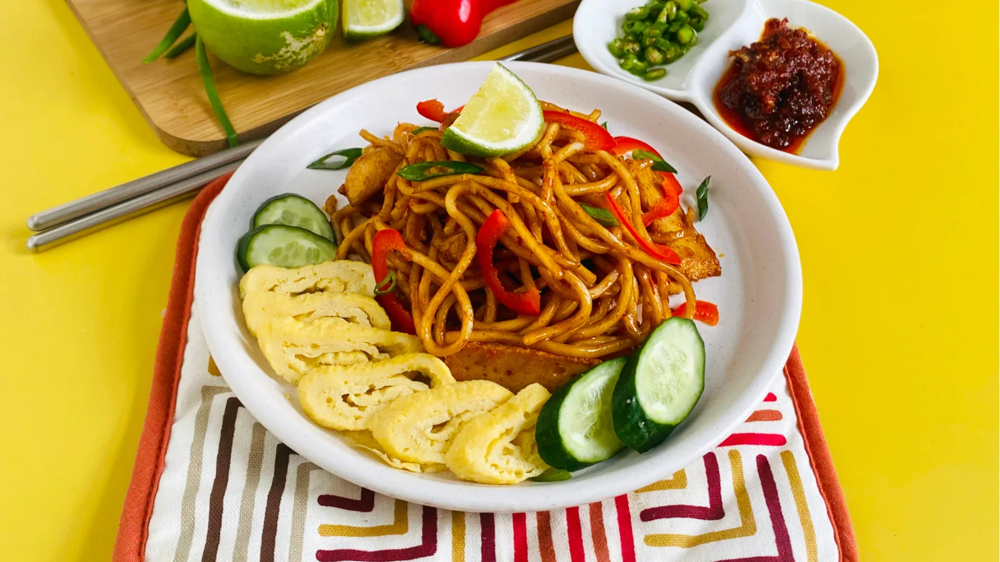

Mee Goreng

Mee Goreng is a stir-fried noodle dish with sweet and spicy flavours
Ingredients
- 1 bungkus 400 gram mee kuning
- 1 mangkuk isi ayam
- 1 paket kek ikan
- 1 paket bebola ikan
- 1/2 mangkuk taugeh
- 1 ikat sawi
- 2 sudu besar cili kering kisar
- 1 sudu besar rempah kari
- 3 sudu besar kicap pekat
- 1 labu bawang besar - hiris
- 3 biji telur
- 3 tangkai cili hijau
- 1/2 sudu kecil garam
- 2 sudu besar minyak masak
- Sedikit air
Recipe instructions
- Panaskan minyak dan tumis bawang besar hiris sehingga naik bau. Masukkan rempah kari dan kacau rata. Masukkan sedikit air.
- Masukkan cili kering kisar dan kacau rata sehingga cili masak. Masukkan ayam dan sedikit air untuk ayam masak. Masak sehingga air kering dan terbit minyak.
- Masukkan kicap pekat dan kacau lagi sehingga sebati. Masukkan kek ikan dan batang sawi. Kacau lagi.
- Masukkan mee kuning dan kacau rata dengan api besar. Setelah rata, masukkan telur. Kacau rata sehingga telur bersalut dengan mee.
- Akhir sekali masukkan garam secukup rasa dan daun sawi. Kacau rata. Sebelum dihidangkan, tabur cili hijau. Selamat menjamu selera.